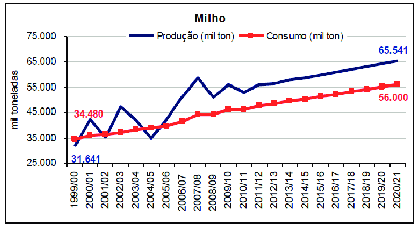

O milho é a segunda maior cultura de importância na produção agrícola no Brasil, sendo superado apenas pela soja que lidera a produção de grãos no país. Para a safra 2015/2016, a produção esperada é de 80 milhões de toneladas. O milho está na história do Brasil desde os primórdios do descobrimento, sendo cultivado por tribos indígenas das regiões Centro-Oeste, e possui tradição na culinária brasileira com pratos como a pamonha, o curau, o mingau e a pipoca, dentre outros. Nesta terça-feira (24) é comemorado o Dia Nacional do Milho, criado pela Lei n° 13.101/2015 , com o objetivo de estimular sua cultura no país. A Confederação da Agricultura e Pecuária do Brasil (CNA) parabeniza os agricultores que produzem e contribuem com o aumento e a promoção do cereal. No início de seu cultivo, o milho era utilizado basicamente para a subsistência humana. Com o decorrer do tempo foi ganhando importância e transformou-se no principal insumo para a produção de aves e suínos, além de sua importância estratégica para a segurança alimentar do brasileiro ao longo das últimas décadas. O Brasil já é o segundo maior exportador mundial de milho, superado apenas pelos Estados Unidos. O produto é reconhecido por sua boa qualidade e por garantir o abastecimento em vários países exatamente no período da entressafra dos EUA. Os principais países importadores do milho aqui produzido são o Vietnã, Irá, Coréia do Sul, Japão, Taiwan, Egito e Malásia.
PRODUÇÃO DIVERSIFICADA
Com o crescimento da produção agrícola brasileira, a partir de 1960 até o ano 2000, as regiões Sul, Sudeste e o estado de Goiás respondiam por aproximadamente 70% da oferta nacional do grão. Entretanto, a partir de 2001, a dinâmica da produção do cereal começou a tomar novos rumos, sendo que, na safra atual (2015/2016) o total da produção destes estados deve representar menos de 45% da colheita no país. Os fatores responsáveis por esta mudança na cadeia produtiva do milho são diversos: expansão da agricultura para o cerrado; busca por novas tecnologias pelos produtores; desenvolvimento de sementes mais adaptadas às condições climáticas de cada região; aquisição de equipamentos de melhor rendimento e desempenho; e criação de técnicas redutoras de perdas físicas e de qualidade. A expansão da soja para o Cerrado levou junto a cultura do milho, que, inicialmente, era utilizado somente como prática de rotação de cultura para incrementar a palha ao solo fraco do bioma e também para quebrar o ciclo de pragas e doenças. De acordo com relato de diversos produtores, as áreas que passavam pelo cultivo de milho nos três anos seguintes apresentavam ganho de produtividade de três a cinco sacas de soja, comparativamente às áreas que não realizavam esta prática. Os produtores adotavam o plantio de milho em aproximadamente 20% das áreas, em cada ano, com o objetivo de melhorar a estruturação do solo e aumentar o rendimento das lavouras de soja. Esta técnica começou a ganhar importância em Mato Grosso, Goiás e Mato Grosso do Sul. Entretanto, a partir de 2001, o plantio do milho segunda safra passou a ganhar destaque nas regiões produtoras de grãos do cerrado, assim como no Paraná e em São Paulo. De acordo com os números da Conab, principais estados produtores de milho são Mato Grosso, com previsão de 20 milhões de toneladas para a colheita 2015/2016, seguido do Paraná com 16,2 milhões de toneladas, Mato Grosso do Sul com 8,3 milhões de toneladas, Goiás com 7,7 milhões de toneladas, Minas Gerais com 7 milhões de toneladas e Rio Grande do Sul com 6 milhões de toneladas.
Políticas públicas e propostas voltadas para a cultura do milho são discutidas, mensalmente, pela Comissão Nacional de Cereais, Fibras e Oleaginosas, da CNA. Segundo o presidente da Comissão, Almir Dalpasquale, o milho no Brasil se destaca pela qualidade e pelo equilíbrio voltado para o consumo interno e as exportações. No seu entender, o país não pode se preocupar apenas com as vendas externas. É preciso incentivar também o consumo interno. O produtor deve olhar não só para o preço, mas também para as agroindústrias que mantêm o mercado interno e promovem o equilíbrio entre a produção e o consumo do produto. Temos uma demanda forte dentro e fora do país”, destacou.
A IMPORTÂNCIA DO MILHO NA VIDA DAS PESSOAS
Além de seu alto prestígio no agronegócio, o milho também é uma das culturas mais cultivadas pela agricultura familiar brasileira, tanto para a subsistência quanto para a venda local. Atualmente, somente cerca de 5% de produção brasileira se destina ao consumo humano e, mesmo assim, de maneira indireta na composição de outros produtos. Isto se deve principalmente à falta de informação sobre o milho e à ausência de uma maior divulgação de suas qualidades nutricionais, bem como aos hábitos alimentares da população brasileira, que privilegia outros grãos, como o arroz e o feijão. No Brasil, é a matéria-prima principal de vários pratos da culinária típica brasileira como canjica, cuscuz, polenta, angu, mingaus, pamonhas, cremes, entre outros como bolos, pipoca ou simplesmente milho cozido ou assado, sendo um alimento com alto potencial energético devido ao seu importante teor de amido. O uso primário do milho nos Estados Unidos e no Canadá é para a alimentação de animais. O Brasil tem situação parecida: 84% do milho é utilizado na alimentação animal, principalmente avicultura e suinocultura, e 11% é consumido pela indústria, para diversos fins. Seu uso industrial não se restringe a alimentos. Ele é largamente utilizado na produção de elementos espessantes e colantes (para diversos fins) e na produção de óleos. Recentemente, a Europa e os Estados Unidos têm incentivado seu uso para produção de etanol. O uso do milho para produção de biocombustíveis tem encarecido seu uso para alimentação. Componentes funcionais que vêm sendo descobertos na composição do milho e que começaram a ser identificados nos últimos cinco anos, são de grande importância para a dieta humana e capazes de atuar na prevenção de doenças cardiovasculares e degenerativas, como alguns tipos de câncer. O milho apresenta carotenóides ligados à prevenção de doenças degenerativas da visão, como a zeaxantina e a luteina , carotenóides presentes em maior concentração na região macular da retina do olho humano, daí sua importância também na prevenção da cegueira. Os carotenóides são essenciais para a prevenção de doenças degenerativas, além de estimularem o sistema imunológico e agirem como antioxidantes. As cultivares de milho destinadas a programas de melhoramento genético com concentrações superiores de pró-vitamina A podem ajudar nos programas de combate à deficiência de vitamina A, principal causa da cegueira em crianças no Brasil, além daquelas participantes do programa de biofortificação em ferro e zinco, que ajudam a diminuir as carências nutricionais .Existem ainda cultivares do grupo QPM (Quality Protein Maize) com teores mais elevados de proteínas e composição mais privilegiada de aminoácidos, apresentando teores de aminoácidos essenciais (lisina e triptofano) significativamente superiores aos do milho comum. O grão de milho contém em média cerca de 4% de óleo, mas há registros de cultivares com até 5%.O óleo de milho ,que é extraído do gérmen ,contém em sua composição ácidos graxos insaturados que atuam no combate ao colesterol sangüíneo elevado e na prevenção de doenças cardiovasculares. Além disso, há a presença de tocoferóis, compostos biológicos que compõem o grupo da vitamina E, conhecida por suas propriedades antioxidantes. A presença de fitoquímicos com ação antioxidante, principalmente o ácido fenólico, o ácido ferúlico e os flavonóides estão associados à redução dos danos em células neuronais e à redução da lesão pré-cancerosa de câncer de cólon. As fibras resultantes do processamento do milho por meio da moagem também possuem efeitos benéficos à saúde humana, já que influenciam no perfil das lipoproteínas – conjunto de proteínas e lipídeos que ajudam o transporte da gordura pelo plasma – e nos níveis de colesterol sanguíneo. Esses efeitos têm sido atribuídos ao importante papel exercido pela fibra na redução do tempo de trânsito intestinal e pelos benefícios na própria flora intestinal, quanto à influência direta no metabolismo de ácidos biliares e na absorção de colesterol, triglicérides e outros lipídeos séricos no intestino. Portanto, o milho merece alcançar uma posição de destaque na alimentação dos brasileiros, tornando-se uma alternativa viável para todas as classes sociais e abrangendo todas as faixas etárias, devido ao seu baixo custo, fácil disponibilidade, modo de preparo versátil, além de importantes propriedades nutricionais.
